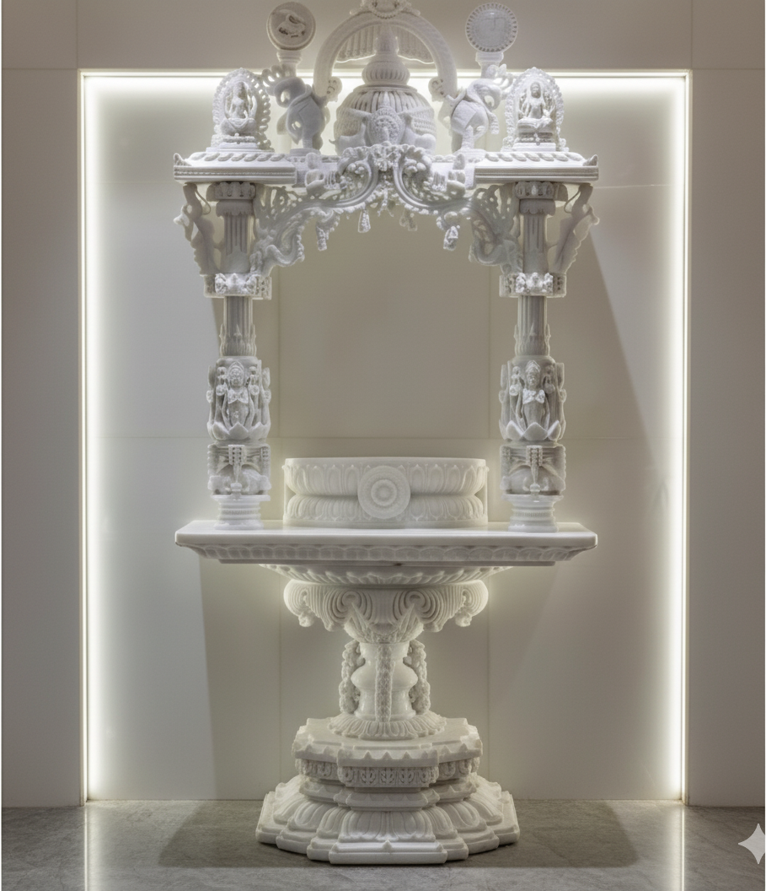
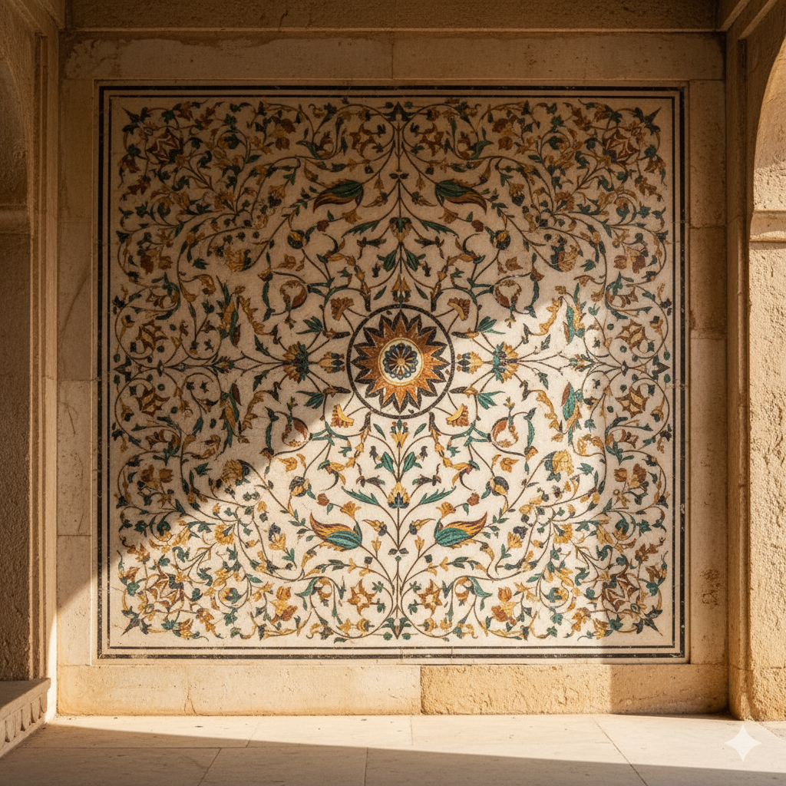
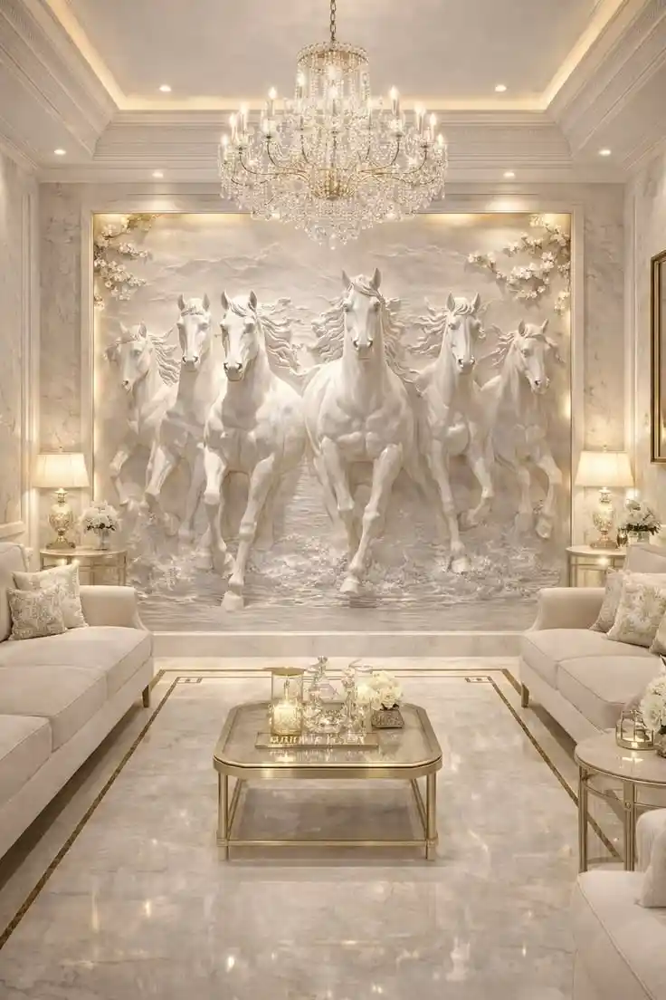
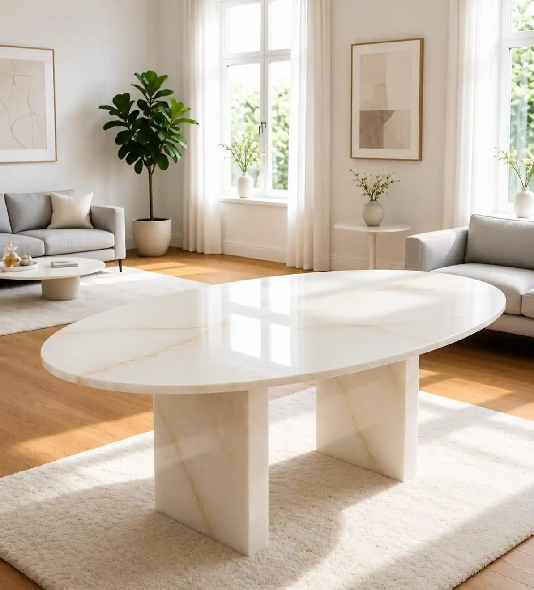
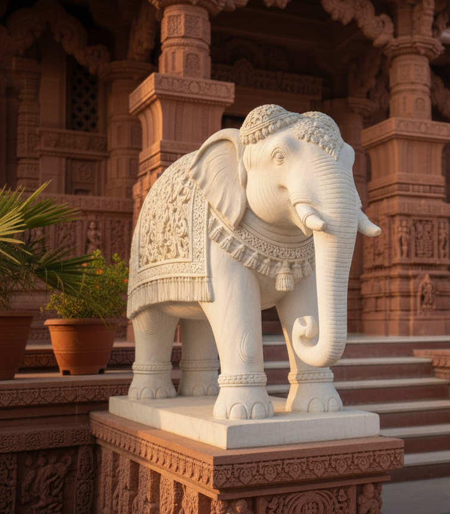
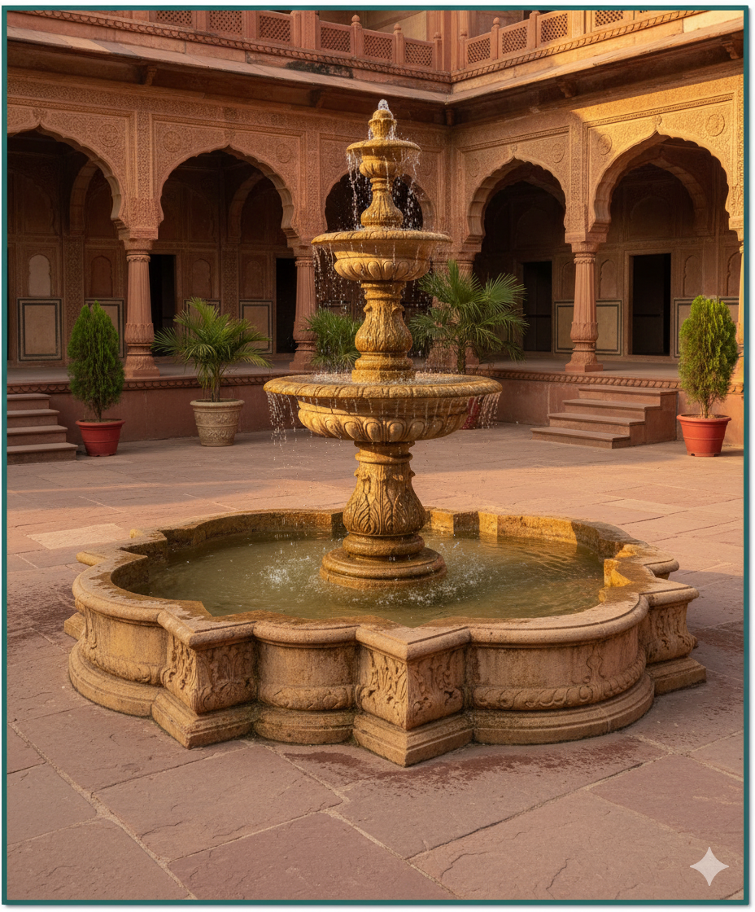
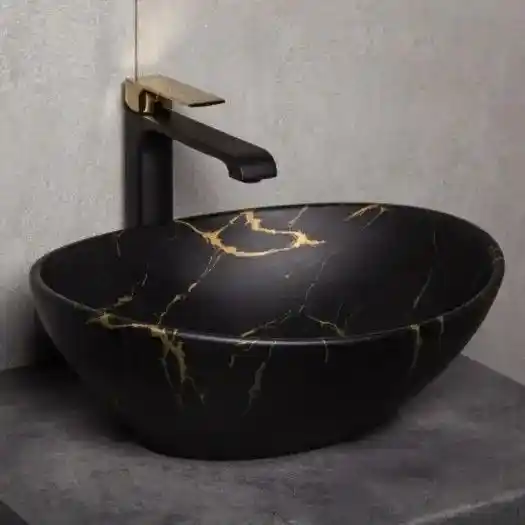
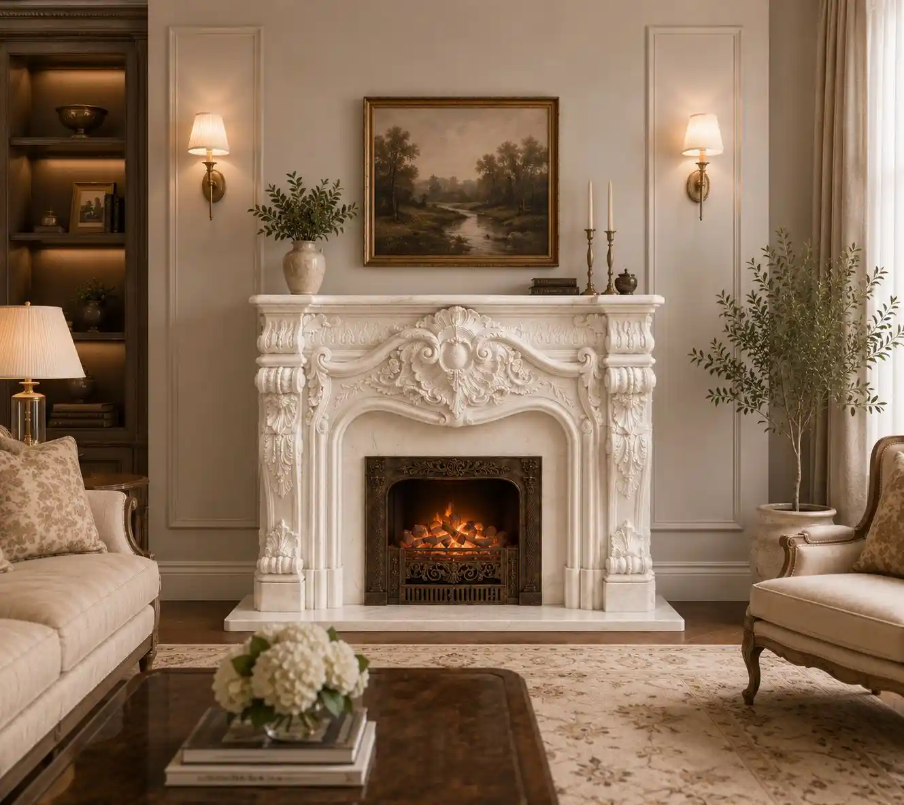

<style>
  /* ============================================================
     CATEGORIES — STONE HUB TRADERS
     Editorial asymmetric grid · Tokens from index.html
     Font-weight 200/300 at scale — the architectural signature
  ============================================================ */

  .cat-section {
    background: var(--stone-white, #F6F3EF);
    padding: clamp(4rem, 8vh, 7rem) 0;
    position: relative;
  }

  .cat-container {
    max-width: 1280px;
    margin: 0 auto;
    padding: 0 clamp(20px, 4vw, 60px);
  }

  /* ── Section header ── */
  .cat-header {
    margin-bottom: clamp(2.5rem, 5vh, 4rem);
    display: flex;
    align-items: flex-end;
    justify-content: space-between;
    gap: 2rem;
    flex-wrap: wrap;
  }

  .cat-header-left { flex: 1; }

  .cat-eyebrow {
    display: flex;
    align-items: center;
    gap: 12px;
    margin-bottom: 10px;
  }

  .cat-eyebrow::before {
    content: '';
    display: block;
    width: 24px;
    height: 1px;
    background: var(--gold, #A89070);
    flex-shrink: 0;
  }

  .cat-eyebrow-label {
    font-family: 'Montserrat', sans-serif;
    font-size: clamp(0.58rem, 0.85vw, 0.65rem);
    font-weight: 700;
    letter-spacing: 4px;
    text-transform: uppercase;
    color: var(--gold, #A89070);
  }

  .cat-section-title {
    font-family: 'Montserrat', sans-serif;
    font-size: clamp(1.8rem, 4vw, 3.2rem);
    font-weight: 300;
    color: var(--charcoal, #111);
    line-height: 1.12;
    letter-spacing: -0.5px;
  }

  .cat-header-tagline {
    font-family: 'Inter', sans-serif;
    font-size: clamp(0.8rem, 1vw, 0.88rem);
    font-weight: 400;
    line-height: 1.68;
    color: var(--text-light, #7A7672);
    max-width: 28ch;
    text-align: right;
    flex-shrink: 0;
    align-self: flex-end;
  }

  /* ── Grid: 3-column base, featured spans 2 ── */
  .cat-grid {
    display: grid;
    grid-template-columns: repeat(3, 1fr);
    gap: clamp(8px, 1.2vw, 14px);
  }

  /* ── Card base ── */
  .cat-card {
    position: relative;
    overflow: hidden;
    background: var(--charcoal, #111);
    display: block;
    text-decoration: none;
    cursor: pointer;
    min-height: clamp(260px, 28vw, 370px);
  }

  /* Featured: Home Mandirs — 2 cols wide, taller */
  .cat-card--featured {
    grid-column: span 2;
    min-height: clamp(380px, 40vw, 520px);
  }

  /* Card adjacent to featured — matches its height */
  .cat-card--adj {
    min-height: clamp(380px, 40vw, 520px);
  }

  /* ── Image ── */
  .cat-img {
    position: absolute;
    inset: 0;
    width: 100%;
    height: 100%;
    object-fit: cover;
    filter: brightness(0.76);
    transition:
      transform 0.85s cubic-bezier(0.4, 0, 0.2, 1),
      filter   0.85s cubic-bezier(0.4, 0, 0.2, 1);
  }

  .cat-card:hover .cat-img {
    transform: scale(1.07);
    filter: brightness(0.52);
  }

  /* ── Gradient overlay ── */
  .cat-overlay {
    position: absolute;
    inset: 0;
    z-index: 2;
    background: linear-gradient(
      to top,
      rgba(0, 0, 0, 0.88) 0%,
      rgba(0, 0, 0, 0.38) 45%,
      rgba(0, 0, 0, 0.04) 100%
    );
    transition: background 0.55s ease;
  }

  .cat-card:hover .cat-overlay {
    background: linear-gradient(
      to top,
      rgba(0, 0, 0, 0.94) 0%,
      rgba(0, 0, 0, 0.62) 55%,
      rgba(0, 0, 0, 0.12) 100%
    );
  }

  /* ── Card body ── */
  .cat-body {
    position: absolute;
    bottom: 0;
    left: 0;
    right: 0;
    padding: clamp(1.2rem, 2vw, 2rem);
    z-index: 3;
  }

  /* 1px gold rule — extends on hover */
  .cat-rule {
    display: block;
    width: 22px;
    height: 1px;
    background: var(--gold, #A89070);
    margin-bottom: clamp(0.65rem, 1.2vh, 1rem);
    transition: width 0.45s cubic-bezier(0.4, 0, 0.2, 1);
  }

  .cat-card:hover .cat-rule { width: 42px; }

  /* Card title: weight 300 — architectural restraint */
  .cat-name {
    font-family: 'Montserrat', sans-serif;
    font-size: clamp(1rem, 1.6vw, 1.45rem);
    font-weight: 300;
    color: var(--pure-white, #fff);
    line-height: 1.2;
    letter-spacing: 0.2px;
    margin: 0;
    transition: transform 0.4s cubic-bezier(0.4, 0, 0.2, 1);
  }

  /* Featured title: ultra-thin at scale */
  .cat-card--featured .cat-name {
    font-size: clamp(1.9rem, 3.2vw, 2.8rem);
    font-weight: 200;
    letter-spacing: -0.5px;
  }

  .cat-card:hover .cat-name { transform: translateY(-4px); }

  /* Description — revealed on hover */
  .cat-desc {
    font-family: 'Inter', sans-serif;
    font-size: clamp(0.74rem, 0.92vw, 0.82rem);
    font-weight: 400;
    line-height: 1.7;
    color: rgba(255, 255, 255, 0.68);
    margin-top: 9px;
    max-width: 36ch;
    opacity: 0;
    transform: translateY(10px);
    transition:
      opacity   0.38s ease 0.06s,
      transform 0.38s ease 0.06s;
  }

  .cat-card:hover .cat-desc {
    opacity: 1;
    transform: translateY(0);
  }

  /* CTA — revealed on hover */
  .cat-cta {
    display: inline-flex;
    align-items: center;
    gap: 10px;
    margin-top: 14px;
    font-family: 'Montserrat', sans-serif;
    font-size: clamp(0.55rem, 0.75vw, 0.62rem);
    font-weight: 700;
    letter-spacing: 3px;
    text-transform: uppercase;
    color: var(--gold, #A89070);
    opacity: 0;
    transform: translateY(8px);
    transition:
      opacity   0.35s ease 0.14s,
      transform 0.35s ease 0.14s;
  }

  /* Animated arrow line */
  .cat-cta-line {
    display: block;
    position: relative;
    width: 18px;
    height: 1px;
    background: var(--gold, #A89070);
    transition: width 0.3s cubic-bezier(0.4, 0, 0.2, 1);
  }

  .cat-cta-line::after {
    content: '';
    position: absolute;
    right: -1px;
    top: -3px;
    width: 7px;
    height: 7px;
    border-right: 1px solid var(--gold, #A89070);
    border-top: 1px solid var(--gold, #A89070);
    transform: rotate(45deg);
  }

  .cat-card:hover .cat-cta         { opacity: 1; transform: translateY(0); }
  .cat-card:hover .cat-cta-line    { width: 28px; }

  /* ── Scroll reveal ── */
  .cat-reveal {
    opacity: 0;
    transform: translateY(24px);
    transition: opacity 0.65s ease, transform 0.65s ease;
  }

  .cat-reveal.in-view {
    opacity: 1;
    transform: translateY(0);
  }

  /* Stagger per card in row */
  .cat-reveal[data-delay="1"] { transition-delay: 0.08s; }
  .cat-reveal[data-delay="2"] { transition-delay: 0.16s; }
  .cat-reveal[data-delay="3"] { transition-delay: 0.10s; }
  .cat-reveal[data-delay="4"] { transition-delay: 0.18s; }
  .cat-reveal[data-delay="5"] { transition-delay: 0.26s; }
  .cat-reveal[data-delay="6"] { transition-delay: 0.10s; }
  .cat-reveal[data-delay="7"] { transition-delay: 0.18s; }
  .cat-reveal[data-delay="8"] { transition-delay: 0.26s; }

  /* ============================================================
     RESPONSIVE
  ============================================================ */

  /* ── Tablet: 2-col layout ── */
  @media (max-width: 900px) {
    .cat-grid {
      grid-template-columns: repeat(2, 1fr);
    }

    /* Featured stays dominant (full width) */
    .cat-card--featured {
      grid-column: span 2;
      min-height: clamp(300px, 50vw, 420px);
    }

    /* Adjacent drops to normal */
    .cat-card--adj {
      grid-column: span 1;
      min-height: clamp(240px, 40vw, 360px);
    }

    .cat-card {
      min-height: clamp(220px, 38vw, 340px);
    }

    /* On tablet: always show desc (no reliable hover) */
    .cat-desc {
      opacity: 1;
      transform: none;
    }

    .cat-cta {
      opacity: 1;
      transform: none;
    }

    .cat-card .cat-img { filter: brightness(0.6); }

    .cat-header-tagline { display: none; }
  }

  /* ── Mobile: single column ── */
  @media (max-width: 540px) {
    .cat-grid {
      grid-template-columns: 1fr;
      gap: clamp(8px, 2.5vw, 12px);
    }

    .cat-card,
    .cat-card--featured,
    .cat-card--adj {
      grid-column: span 1;
      min-height: 280px;
    }

    .cat-card--featured { min-height: 320px; }

    .cat-card--featured .cat-name {
      font-size: clamp(1.5rem, 7vw, 2.2rem);
    }

    .cat-body {
      padding: 1.2rem;
    }
  }

  /* ── Reduced motion ── */
  @media (prefers-reduced-motion: reduce) {
    .cat-img  { transition: none; }
    .cat-desc,
    .cat-cta  { opacity: 1 !important; transform: none !important; }
    .cat-reveal { opacity: 1 !important; transform: none !important; }
  }
</style>

<section class="cat-section" id="categories">
  <div class="cat-container">

    <!-- ── Header ── -->
    <div class="cat-header cat-reveal">
      <div class="cat-header-left">
        <div class="cat-eyebrow">
          <span class="cat-eyebrow-label">Our Collections</span>
        </div>
        <h2 class="cat-section-title">
          What We<br>Craft
        </h2>
      </div>
      <p class="cat-header-tagline">
        Eight collections. One source.<br>
        Makrana, Rajasthan.
      </p>
    </div>

    <!-- ── Grid ── -->
    <div class="cat-grid">

      <!-- 01 · Home Mandirs — Featured (span 2, tallest) -->
      <!-- REPLACE IMAGE: assets/homemandir12.png -->
      <a href="home-mandir.html" class="cat-card cat-card--featured cat-reveal" data-delay="0" aria-label="Explore Home Mandirs collection">
        
        <div class="cat-overlay"></div>
        <div class="cat-body">
          <span class="cat-rule" aria-hidden="true"></span>
          <h3 class="cat-name">Home Mandirs</h3>
          <p class="cat-desc">Each mandir is a crafted — shaped around your space, your deity, your family.</p>
          <span class="cat-cta">Explore Collection <span class="cat-cta-line" aria-hidden="true"></span></span>
        </div>
      </a>

      <!-- 02 · Inlay Work — Adjacent to featured -->
      <!-- REPLACE IMAGE: assets/inly9.png -->
      <a href="inlay-work.html" class="cat-card cat-card--adj cat-reveal" data-delay="1" aria-label="Explore Inlay Work collection">
        
        <div class="cat-overlay"></div>
        <div class="cat-body">
          <span class="cat-rule" aria-hidden="true"></span>
          <h3 class="cat-name">Inlay Work</h3>
          <p class="cat-desc">Semi-precious stone set into white marble — a tradition rooted in Mughal craft.</p>
          <span class="cat-cta">Explore Collection <span class="cat-cta-line" aria-hidden="true"></span></span>
        </div>
      </a>

      <!-- 03 · Marble Wall Cladding -->
      <!-- REPLACE IMAGE: assets/floor22.png → your wall cladding image -->
      <a href="wall-cladding.html" class="cat-card cat-reveal" data-delay="3" aria-label="Explore Marble Wall Cladding collection">
        
        <div class="cat-overlay"></div>
        <div class="cat-body">
          <span class="cat-rule" aria-hidden="true"></span>
          <h3 class="cat-name">Wall Cladding</h3>
          <p class="cat-desc">feature walls in premium Makrana marble. Architecture defined by material.</p>
          <span class="cat-cta">Explore Collection <span class="cat-cta-line" aria-hidden="true"></span></span>
        </div>
      </a>

      <!-- 04 · Marble Table Top -->
      <!-- REPLACE IMAGE: assets/ → your table top image -->
      <a href="marble-table.html" class="cat-card cat-reveal" data-delay="4" aria-label="Explore Marble Table Tops collection">
        
        <div class="cat-overlay"></div>
        <div class="cat-body">
          <span class="cat-rule" aria-hidden="true"></span>
          <h3 class="cat-name">Marble Table Tops</h3>
          <p class="cat-desc">Dining tables, console tops, and coffee surfaces in book-matched Makrana slabs.</p>
          <span class="cat-cta">Explore Collection <span class="cat-cta-line" aria-hidden="true"></span></span>
        </div>
      </a>

      <!-- 05 · Urli & Handicrafts -->
      <!-- REPLACE IMAGE: assets/hand8.png -->
      <a href="handicrafts.html" class="cat-card cat-reveal" data-delay="5" aria-label="Explore Urli and Handicrafts collection">
        
        <div class="cat-overlay"></div>
        <div class="cat-body">
          <span class="cat-rule" aria-hidden="true"></span>
          <h3 class="cat-name">Urli &amp; Handicrafts</h3>
          <p class="cat-desc">Decorative urli bowls, gift pieces and artisan objects — the quiet craft of Makrana artisans.</p>
          <span class="cat-cta">Explore Collection <span class="cat-cta-line" aria-hidden="true"></span></span>
        </div>
      </a>

      <!-- 06 · Fountain -->
      <!-- REPLACE IMAGE: assets/hand10.png -->
      <a href="fountain.html" class="cat-card cat-reveal" data-delay="6" aria-label="Explore Marble Fountains collection">
        
        <div class="cat-overlay"></div>
        <div class="cat-body">
          <span class="cat-rule" aria-hidden="true"></span>
          <h3 class="cat-name">Fountains</h3>
          <p class="cat-desc">Garden and courtyard fountains carved from where still stone meets moving water.</p>
          <span class="cat-cta">Explore Collection <span class="cat-cta-line" aria-hidden="true"></span></span>
        </div>
      </a>

      <!-- 07 · Wash Basin & Bathtub -->
      <!-- REPLACE IMAGE: assets/ → your wash basin / bathtub image -->
      <a href="wash-basin.html" class="cat-card cat-reveal" data-delay="7" aria-label="Explore Wash Basin and Bathtub collection">
        
        <div class="cat-overlay"></div>
        <div class="cat-body">
          <span class="cat-rule" aria-hidden="true"></span>
          <h3 class="cat-name">Basin &amp; Bathtub</h3>
          <p class="cat-desc">Freestanding bathtubs and vessel basins sculpted from white Makrana marble.</p>
          <span class="cat-cta">Explore Collection <span class="cat-cta-line" aria-hidden="true"></span></span>
        </div>
      </a>

      <!-- 08 · Fireplace -->
      <!-- REPLACE IMAGE: assets/ → your fireplace image -->
      <a href="fireplace.html" class="cat-card cat-reveal" data-delay="8" aria-label="Explore Marble Fireplace collection">
        
        <div class="cat-overlay"></div>
        <div class="cat-body">
          <span class="cat-rule" aria-hidden="true"></span>
          <h3 class="cat-name">Fireplaces</h3>
          <p class="cat-desc">frames in carved marble — heat that meets heritage.</p>
          <span class="cat-cta">Explore Collection <span class="cat-cta-line" aria-hidden="true"></span></span>
        </div>
      </a>

    </div>
  </div>
</section>

<script>
(function () {
  /* ── Scroll reveal ── */
  var io = new IntersectionObserver(function (entries) {
    entries.forEach(function (e) {
      if (e.isIntersecting) {
        e.target.classList.add('in-view');
        io.unobserve(e.target);
      }
    });
  }, { threshold: 0.08, rootMargin: '0px 0px -30px 0px' });

  document.querySelectorAll('.cat-reveal').forEach(function (el) {
    io.observe(el);
  });

  /* ── Touch device: always-visible content ──
     Hover states don't fire on touch; we force visibility below 900px
     via CSS already, but this guards against mid-range touch tablets. */
  var isTouch = window.matchMedia('(hover: none)').matches;
  if (isTouch) {
    document.querySelectorAll('.cat-desc, .cat-cta').forEach(function (el) {
      el.style.opacity = '1';
      el.style.transform = 'translateY(0)';
    });
    document.querySelectorAll('.cat-img').forEach(function (img) {
      img.style.filter = 'brightness(0.58)';
    });
  }

  console.log('✔ Categories initialized');
})();
</script>